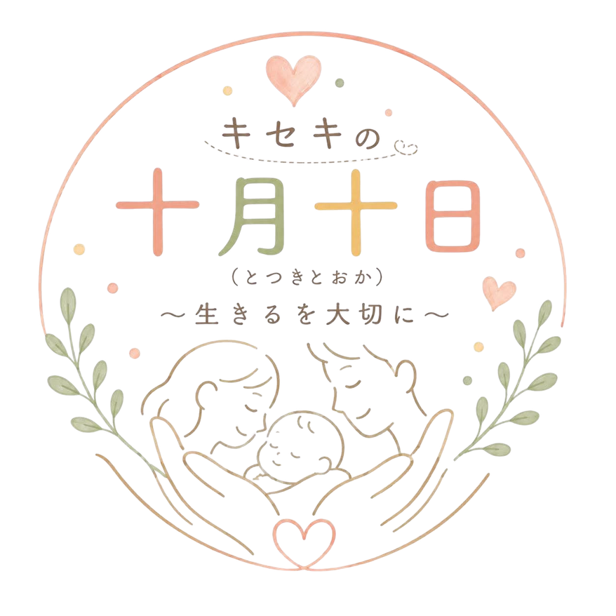

ママの力
子育て中のママたちが企画・運営・発信を担当。来場者と同じ目線を持つ当事者だからこそ、温かなコミュニケーションと自然な口コミが生まれます。

キセキの十月十日ABOUT
誰もが生まれるまでに経験した十月十日。その奇跡を振り返り、 ありのままの自分を大切にするきっかけを届けます。 地域・学校・企業・市民がつながり、ともに創り上げる参加型イベントです。
子育て中のママたちが企画・運営・発信を担当。来場者と同じ目線を持つ当事者だからこそ、温かなコミュニケーションと自然な口コミが生まれます。
神戸駅・地下鉄ハーバーランド駅からすぐの好立地。土日祝は約9万人が行き交うエリアで、多くのファミリー層との接点が期待できます。
「いのち」「生きること」という普遍的なテーマだからこそ、世代を問わず共感が生まれ、教育や子育てに関心の高い親子が集まります。
EXPERIENCE
自分らしく生きる大切さを、見て・つくって・感じられる4つの体験を用意しています。
「キセキの十月十日」展示／赤ちゃん先生体験
カメラマンによる写真撮影／手形アート
大切な人への手紙／命の年表づくり
10年後の自分へ贈るメッセージ／あなたの十月十日キャンペーン
「あなたの十月十日キャンペーン」はSNSを利用し、イベント開催前から参加できます。 命の年表＆メッセージツリーは神戸芸術工科大学の学生がオブジェを制作します。
OUTLINE
ORGANIZER
Mission ｜「子育て中がメリットになる働き方をつくる」
2007年の設立から18年、全国のママネットワークで教育・企業・地域づくりに関わり、子育てを社会の力へと結びつけている団体です。現在、全国18拠点で活動中。
2012年から神戸でスタート。赤ちゃんとのふれあいを通して、教育現場や高齢者施設に「学び」や「気づき」を届けています。
2025年度 神戸市内での実績：52施設で82回実施
SPONSOR
子育て世帯を中心とした来場者と直接つながり、地域貢献と企業価値の向上につながる参画プランです。
¥110,000
¥33,000
応相談
神戸市営地下鉄 全駅でのポスター掲出（9/1〜2週間）、子育て世帯へチラシ15,000部配布。
子育て支援や次世代育成への取り組みとして、企業価値やブランドイメージの向上につながります。
ママスタッフが来場者との懸け橋となり、体験を通じた自然な交流の機会を創出します。
子どもたちが働く人に触れ、次世代への認知向上や採用ブランディングにもつながります。
CONTACT
本資料に関するご不明点・ご要望は、お気軽にご連絡ください。
皆さまとともに歩んでいけることを願っています。